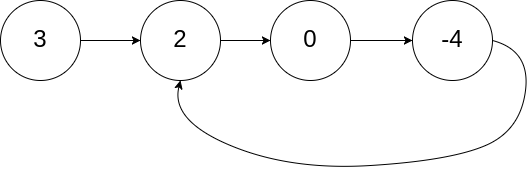
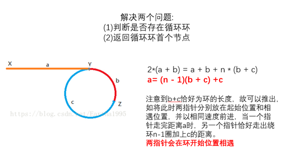

链表精选
Comment摘录了一些经典的链表题
[toc]
快慢指针法#
141. Linked List Cycle √#
给定一个链表，判断链表中是否有环。
为了表示给定链表中的环，我们使用整数 pos 来表示链表尾连接到链表中的位置（索引从 0 开始）。 如果 pos 是 -1，则在该链表中没有环。
示例 1：
输入： head = [3,2,0,-4], pos = 1
输出： true
解释： 链表中有一个环，其尾部连接到第二个节点。

- 方法一：HashSet
我们可以使用HashSet的方法实现O（N）时间复杂度，O（N）空间复杂度。1
2
3
4
5
6
7
8
9
10
11
12
13
14
15
16
17
18
19
20
21public class Solution {
public boolean hasCycle(ListNode head) {
HashSet<ListNode> set = new HashSet();
if(head == null)
return false;
else{
set.add(head);
ListNode nextN = head.next;
while(nextN!=null){
if(set.contains(nextN))
return true;
else
set.add(nextN);
nextN=nextN.next;
}
return false;
}
}
} - 方法二：Floyd龟兔赛跑
我们跑步的例子来解释，如果两个人同时出发，如果赛道有环，那么快的一方总能追上慢的一方。进一步想，追上时快的一方肯定比慢的一方多跑了几圈，即多跑的路的长度是圈的长度的倍数。基于上面的想法，Floyd用两个指针，一个慢指针（龟）每次前进一步，快指针（兔）指针每次前进两步（两步或多步效果时等价的，只要一个比另一个快就行）。如果两者在链表头以外的某一点相遇（即相等）了，那么说明链表有环，否则，如果（快指针）到达了链表的结尾，那么说明没有环。提问：时间复杂度是多少？1
2
3
4
5
6
7
8
9
10
11
12
13
14public class Solution {
public boolean hasCycle(ListNode head) {
if(head == null||head.next==null)return false;//the initialized condition
ListNode fast = head;
ListNode slow = head;
while(fast!=null&&fast.next!=null){
slow=slow.next;
fast=fast.next.next;
if(slow == fast)
return true;
}
return false;
}
}
142. Linked List Cycle II √#
给定一个链表，返回链表开始入环的第一个节点。 如果链表无环，则返回 null。
为了表示给定链表中的环，我们使用整数 pos 来表示链表尾连接到链表中的位置（索引从 0 开始）。 如果 pos 是 -1，则在该链表中没有环。
说明：不允许修改给定的链表。
示例 1：
输入：head = [3,2,0,-4], pos = 1
输出：tail connects to node index 1
解释：链表中有一个环，其尾部连接到第二个节点。

1 | public class Solution { |
876. Middle of the Linked List √#
给定一个带有头结点 head 的非空单链表，返回链表的中间结点。
如果有两个中间结点，则返回第二个中间结点。
1 | public ListNode middleNode(ListNode head) { |
双指针法#
203. Remove Linked List Elements#
Remove all elements from a linked list of integers that have value val.
Example:
Input: 1->2->6->3->4->5->6, val = 6
Output: 1->2->3->4->5
1 | public ListNode removeElements(ListNode head, int val) { |